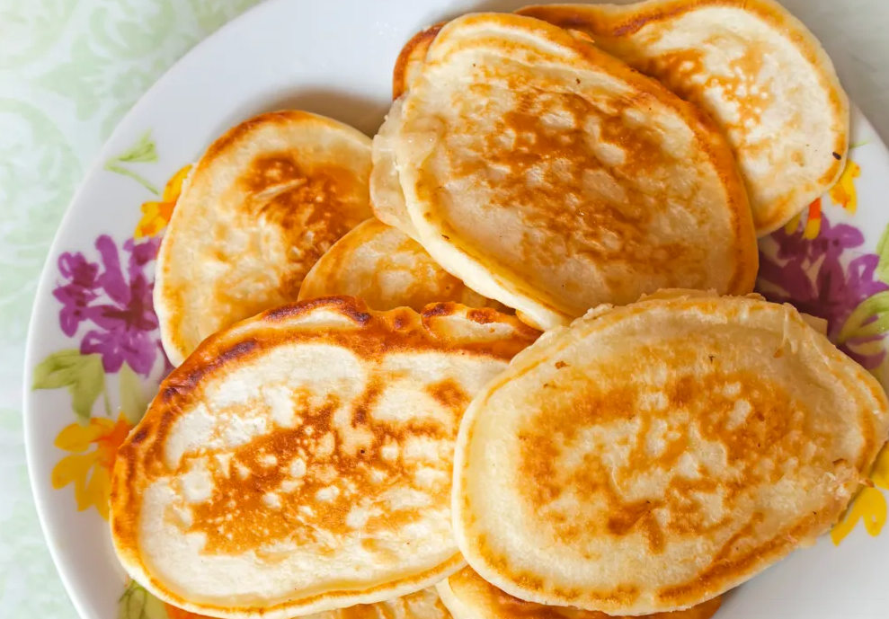

Ingrédients
Ingrédients pour 4 personnes :
- 150g de farine
- 10g de levure de boulanger
- beurre
- 2oeufs
- 20cl de lait à température ambiante
- sel
Étape 1
Mélanger la levure et le lait. Laisser reposer à température ambiante 5 min.
Étape 2
Faire un puits avec la farine et déposer au milieu le sel, la levure et les jaunes d'oeufs.
Étape 3
Bien mélanger en mettant progressivement le lait.
Étape 4
Laisser de côté pendant 4 h.
Étape 5
Monter les blancs en neige et les incorporer délicatement.
Étape 6
Cuire chaque blinis dans une petite poêle beurrée de 12 cm au plus.